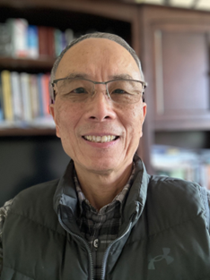

About Us
Company Management Team
- Jeffrey T. Jensen, MD, MPH – Founder and Chief Medical Officer...
- Holly Rockweiler – Chief Technology Officer...
- Jian Xin Guo, PhD – Chief Scientific Officer...
- Philberta Leung, PhD, PMP – Chief Operations Officer...
Business Advisory Group
- Sabrina Johnson, CEO of Daré...
- Brian A. Bernick, MD...
- Andrew Barofsky, JD, MBA...
Scientific Advisory Group
- David Archer, MD...
- Charles Carignan, MD...
- Bob Katz, MS, MBA...
- Amy Thurmond, MD...
- Lisa Rarick, MD...
- Don Waller, PhD...